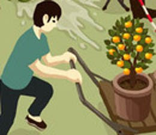
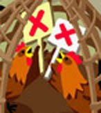
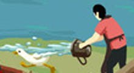

A Dictionary of Cantonese Slang (俗語字典) - The language of Hong Kong movies, street gangs and city life. The following are some items in the book and some funny Cantonese idioms and proverbs listed also.
Funny illustrations of Cantonese proverbs in a cartoon picture:
| 上山捉蟹 [séuhng sāan jūk háaih]
(To catch crabs on a hill → 難[nàan], 難上難 [nàan séuhng nàan]) | |
| 鬼揞眼 [gwái ám ngáahn]
(A ghost covers one’s eyes) |
|
| 有錢使得鬼推磨 [yáuh chín sái dāk gwái tēui mòh]
(if you have money, you can make a ghost push a millstone) |
|
| 鬼畫符 [gwái waahk fùh]
(A ghost draws a talisman) |
|
| 鬼拍後尾枕 [gwái paak hauh méih jám]
(A ghost slaps the back of one’s head) |
|
| 多個香爐多隻鬼 [dō go hēung lòuh dō jek gwái]
(An extra incense burner would attract an extra ghost) |
|
| 呃鬼食豆腐 [ngāak gwái sihk dauh fuh]
(To trick a ghost into eating tofu;cheating the ghost to eat bean curd) |
|
| 扮鬼扮馬 [baahn gwái baahn máah]
(To masquerade as a ghost and as a horse) |
|
| 放飛機 [fong fēi gēi]
(To throw a paper aeroplane) |
|
| 樹大有枯枝 [syuh daaih yáuh fū jī]
(A big tree has some dead branches) |
|
| 床下底吹喇叭 [chòhng hah dái chēui laa bāa]
(Blowing a horn under the bed, implying speaking at a kowtow position → 低聲下氣 [dāi sēng haah hei]) |
|
| 佛都有火 [faht dōu yáuh fó]
(Even the Buddha gets inflamed) |
|
| 老貓燒鬚 [lòuh māau sīu sōu]
(An old cat burns its whiskers) |
|
| 拉牛上樹 [lāai ngàuh séuhng syuh]
(To pull a cow up a tree) |
|
| 豬乸會上樹 [jyū ná wúih séuhng syuh]
(Female pigs can climb trees) |
|
| 開籠雀 [hōi lùhng jéuk]
(A bird in an open cage) |
|
| 兩頭蛇 [lèuhng tàuh sèh]
(Two-headed snake) |
|
| 床下底劈柴 [chòhng hah dái pek chàaih]
(Chopping wood under a bed. → 包撞板 [bāau johng báan]. If someone is hiding under a bed but moves vigorously, very possibly he would bang his head against the wooden plate above him.) |
|
| 玻璃夾萬 [bō lēi gaap maahn]
(A glass safe → 襟睇唔襟用 [kām tái m̀h kām yuhng], 有得睇冇得使 [yáuh dāk tái móuh dāk sái]) |
|
| 上面蒸鬆糕，下面賣涼粉 [séuhng mihn jīng sūng gōu,hah mihn maaih lèuhng fán] (Steaming sponge cake on top, selling cool powder below. Cool powder is glass jelly in English) |
|
| 掛羊頭賣狗肉 [gwa yèuhng tàuh maaih gáu yuhk]
(Hang up a sheep’s head and sell dog meat) |
|
| 大石笮死蟹 [daaih sehk jaak séi háaih]
(A big stone crushes a crab) |
|
| 倒瀉籮蟹 [dóu sé lòh háaih]
(Spilled a basket of crabs) |
|
| 賣魚佬洗身/沖涼 [maaih yùh lóu sái sān/chūng lèuhng]
(A fishmonger washes his body – 冇晒腥氣 [móuh saai sēng hei] “no stinky smell”, which sounds like 冇晒聲氣 [móuh saai sēng hei] “no breath”. ) |
|
 |
煲電話粥 [bōu dihn wá jūk]
(To boil telephone congee) |
| 冬瓜豆腐 [dūng gwā dauh fuh]
(Winter melon and tofu) |
|
| 倒吊沙煲 [dou diu sā bōu]
(A pot hanged upside down, → 冇飯開, 窮到粒米都冇 [móuh faahn hōi, kùhng dóu nāp máih dōu móuh] implying that there is no rice left) |
|
| 十個茶壺九個蓋 [sahp go chàh wú gáu go goi]
(ten tea pots and nine lids → 捉襟見肘 [jūk kām gin jáu]) |
|
| 刀仔鋸大樹 [dōu jái geu daaih syuh]
(Use a little knife to saw down a tree) |
|
| 賊佬試沙煲 [chaahk lóu si sā bōu]
(A thief is testing a pot. → 試下先 [si haah sīn] A burglar tests if there is any one home by breaking a pot.) |
|
| 冇柄遮 [móuh beng jē]
(An umbrella with broken handle → 無揸拿 [móuh jāa nàah]) |
|
| 甩繩馬騮 [lāt síng máah láu]
(Loose string monkey) |
|
| 馬騮執到桔 [máah láu jāp dóu gāt]
(A monkey got a tangerine → 開心, 執到寶咁開心 [hōi sām, jāp dóu bóu gam hōi sām]) |
|
|  | 運桔 [wahn gāt]
(To ship tangerines) (*Gang members extort money by forcing shops to buy pots of tangerines) |
| 鬼食泥 [gwái sihk nàih]
(a ghost eats mud) |
|
 |
盲公食湯丸 [màahng gūng sihk tōng yún]
(A blind man eats glue pudding → 心裡有數 [sām léuih yáuh sou]) |
| 食拖鞋飯 [sihk tō háai faahn]
(To eat slippers rice → 食軟飯 [sihk yúhng faahn], 靠女人養 [kaau néuih yán yéuhng]) |
|
| 食人隻車 [sihk yàhn jek gēui]
(To have eaten someone’s cart) |
|
| 食碗面反碗底 [sihk wún mín fáan wún dái]
(To eat from a bowl and then turn it over) |
|
| 食死貓 [sihk séi māau]
(to eat a dead cat) |
|
| 放葫蘆 [fong wùh lóu]
(To throw a gourd → 大隻廣, 吹牛 [daai jek gwóng, chēui ngàuh]) |
|
| 放飛劍 [fong fēi gim]
(To throw a flying sword) |
|
| 企喺城樓睇馬打交 [kéih hái sìhng mùhn tái dá gāau]
(To watch a horse fight from the top of a fort → 事不關己, 睇熱鬧 [sih bāt gwāan géi, tái yiht naauh]) |
|
| 飛象過河 [fēi jeuhng gwo hòh]
(An elephant flies across the river) |
|
| 事急馬行田 [sih gāp máah hàahng tìhn]
(In a crisis, a horse can move in the field) |
|
| 過橋抽板 [gwo kíuh chāu báan]
(To pull up the planks after crossing the bridge) |
|
| 和尚擔遮 [wòh séung dāam jē]
(A monk holding an umbrella → 無髮無天 [móuh faat móuh tīn] “no hair no sky”, which sounds like 無法無天 [móuh faat móuh tīn] “no law no heaven”) |
|
| 牛唔飲水唔撳得牛頭低 [ngàuh m̀h yám séui m̀h gahm dāk ngàuh tàuh dāi]
(If a cow doesn’t want to drink, you can’t force its head down) |
|
| 冇鞋挽屐走 [móuh hàaih wáan kehk jáu]
(When there are no shoes, grab the clogs and run) |
|
| 馬死落地行 [máh séi lohk deih hàahng]
(when one’s horse dies, one has to walk) |
|
| 捉到鹿唔識脫角 [jūk dóu lúk m4 sīk tyut gok]
(Got hold of the deer but can’t get the horn) |
|
| 一竹篙打一船人 [yāt jūk gōu dá yāt syùhn yàhn]
(Hitting everyone on a boat with a punt pole) |
|
| 缸瓦船打老虎 [gōng ngáh syùhn dá lóuh fú]
(Hitting a tiger inside a boat full of potteries → 盡地一煲 [jeuhn deih yāt bōu], 在絕境下最後一博 [joih jyuht gíng haah jeui hauh yāt bok]) |
|
| 船頭尺 [syùhn tàuh chek]
(Plumb line on a ship) |
|
| 黑狗得食白狗當災
[hāk gáu dāk sihk, |
|
| 豬籠入水 [jyū lùhng yahp séui]
(Water enters a pig basket) |
|
| 濕水炮仗 [sāp séui paau jéung]
(A damp firecracker) |
|
| 菠羅雞 [bō lòh gāi]
(Pineapple chicken → 靠黐 [kaau chī], 一味靠黐 [yāt meih kaau chī]) (*Pineapple chicken is the mascot of the Pala Temple in Canton, |
|
| 單眼佬睇老婆 [dāan ngáahn lóu tái lòuh pòh]
(One-eyed man looks at his wife → 一眼睇晒 [yāt ngáahn tái saai]) |
|
| 狗仔抬轎 [gáu jái tòih kìuh]
(Puppies lifting /carrying a sedan chair → 唔識抬舉 [m̀h sīk tòih géui] not knowing how to lift/carry things) |
|
| 畫隻耳仔上牆 [waahk jek yìh jái séuhng chéung]
(Draw an ear on the wall → 唔聽流言 [m̀h tēng làuh yìhng]) |
|
| 摸門釘 [mó mùhn dēng]
(To scrape the door nails) |
|
| 狗咬狗骨 [gáu ngáauh gáu gwāt]
(A dog bites another dog’s bones) |
|
| 死雞撐飯蓋 [séi gāi chaang faahn goi]
(Using a dead chicken to push back the cooking-pot lid) |
|
| 炒魷魚 [cháau yáu yú]
(To stir-fry squid) |
|
| 劏白鶴 [tōng baahk hohk/hók]
(To slaughter a white crane) |
|
| 風扇底(下)傾偈 [fūng sin dái (haah) kīng gái]
(Talking under a fan → 講風涼話 [góng fūng lèuhng waah] a chilling talk ) |
|
| 風吹雞蛋殼 [fūng chēui gāi dáan hok]
(Wind breaks an eggshell → 財散人安樂 [chòih saan yàhn ōn lohk]) |
|
| 打蛇隨棍上 [dá sèh chèuih gwan séuhng]
(To hit a snake and it crawls up the stick) |
|
| 禾稈冚珍珠 [wóh gón kám jān jyū]
(Rice stalks covering pearls) |
|
| 雞食放光蟲 [gāi sihk fong gwōng chúng]
(A chicken eats fireflies →心知肚明[sām jī tóuh mìhng]) |
|
| 冇掩雞籠 [móuh yím gāi lùhng]
(A doorless chicken coop →自出自入[jih chēut jih yahp]) |
|
|  | 籠裏雞作反 [lùhng léuih gāi jok fáan]
(The chickens are fighting inside the coop) |
 |
一雞死一雞鳴 [yāt gāi séi yāt gāi mìhng]
(One chicken dies, one chicken crows) |
| 老鼠拉龜 [lòuh syú lāai gwāi]
(A mouse pulls a turtle → 無掟埋手 [móuh deng màaih sáu]) |
|
| 扯貓尾 [ché māau mèih]
(To pull a cat’s tail) |
|
| 捉黃腳雞 [jūk wòhng geuk gāi]
(To catch a yellow-legged chicken → 捉姦 [jūk gāan]) |
|
| 貼錯門神 [tip cho mùhn sàhn]
(To paste up the door gods wrongly) |
|
| 龜過門檻 [gwāi gwo mùhn láahm]
(A tortoise passing a sill, → 看此一翻/番 [hon chí yāt fāan] implying someone who can’t get on or get off) |
|
| 騎牛搵馬 [kèh ngáuh wán máh]
(To ride an ox looking for a horse) |
|
| 執死雞 [jāp séi gāi]
(To pick up a dead chicken) |
|
|  | 水過鴨背 [séui gwo ngaap bui]
(Water off a duck’s back) |
| 咁大隻蛤乸隨街跳 [gam daaih jek gap lá chèuih gāai tiu]
(such a big frog hopping around the street) |

阿茂整餅 [aa mauh jíng béng] (Mr Stupid makes cakes) → 冇嗰樣整嗰樣 [móuh gó yeuhng jíng gó yeuhng] (does something unnecessary) someone doing something pointless or meaningless; a stupid action.
啞仔食黃蓮 [áa jái sihk wòhng lìhn] (a dumb boy eats Coptis seeds) → 有苦自己知 [yàuh fú jih géi jī] (knowing the bitterness by oneself) to have to suffer in silence.
扮豬食老虎 [baahn jyū sihk lóuh fú] (to pretend to be a pig and eat a tiger) to appear harmless, but in fact to be dangerous or ruthless; to pretend to be a fool but to be actually very clever.
扮晒魚蝦蟹 [baahn saai yùh hāa háaih] to act as if one is powerful; to behave pretentiously.
俾人食咗隻豬 [béi yàhn sihk jó jek jyū] to have one's roast pig eaten; used to refer to the fact that one's girlfriend or future wife is not a virgin, that she had a previous lover.
茶瓜送飯 [chàah gwāa sung faahn] sugared melon with rich → 好人有限 [hóu yàhn yáuh haahn] a limit to how good someone is; a bad person (since sugared melon is eaten when someone is ill or "not good".)
醜婦終須見家翁 [cháu fúh jūng sēui gin gāa yūng] an ugly woman still has to meet her husband's father; to have to do something one would prefer not to do 唔係勒，醜婦終須見家翁，"發個輪"俾曹四睇吓點。 [m̀h haih laak, cháu fúh jūng sēui gin gāa yūng, faat go léun béi chòuh sei tái háah dím] No, I suppose I'd better though I'd rather not, I'll bring Chou to see what's happening.
吹水唔抹咀 [chēui séui m̀h maat jéui] (to talk bullshit; to lie, to tell big lies) 小春不嬲吹水唔抹咀 [síu cheūn bāt lāu chēui séui m̀h maat jéui] small Cheun is always talking bullshit and never shuts his mouth.
潮州音樂 [chìuh jāu yām ngohk] (Chiu Chow music → 自己顧自己[jih géi gwu jih géi] everyone for themselves), the Chiu Chow opera chorus "gìh gī gu gìh gī", which sounds like in Cantonese is "jih géi gwu jih géi".
花被衿雞籠 [fāa peih kám gāi lùhng] (patterned coverlet covering chicken's coop → 外便好睇裡頭空 [ngoih bihn hóu tái léuih tàuh hūng] outside good looking, inside empty) someone who looks rich but in fact has no money.
非洲和尚 [fēi jāu wòh séung] (African Buddhist monk → 乞人憎 [hāt yàhn jāng] terrible) terrible, awful, detestable, despicable (a pun based on the synonym 黑人僧("Black monk") which sounds like 乞人憎 [hāt yàhn jāng] (detestable).
風水輪流轉 [fūng séui lèuhn làuh jyún] (the wheel of fortune turns) fortunes change, the "boot will be one the other foot!" (你玩我玩得耐，家陣風水輪流轉。) [néih wáan ngóh wáan dāk noih, gāa ján fūng séui lèuhn làuh jyún] (You've been giving me a hard time for many years, now the boot is on the other foot.)
狗上瓦坑 [gáu séuhng ngáah hāang] (a dog goes up the roof → 有條路[yáuh tìuh louh]there is a way) used to accuse someone of behaving secretively, especially of having an extramarital affair.
雀仔吹喇叭 [jeuk jái chēui laa bāa] (little bird blowing a trumpet → 嘥氣 [sāai hei] a waste of breath) to talk nonsense; to waste one's breath.
落地蟹殻 [lohk deih háaih hok] (crab shell on the floor → 富能窮不能 [fu nàhng kùhng bāt nàhng] it's ok for the rich but not the poor) used to refer to something that only rich people can do (i.e. crab shell on the floor is a problem for poor people since poor people do not have shoes.)
兩公婆見鬼 [lèuhng gūng pó gin gwái] (husband and wife see a ghost → 唔係你就係我 [m̀h haih néih jauh haih ngóh] if it wasn't you it was me) one of the two possibilities must be true, one of the two people involved must be responsible.
冇尾燒豬 [móuh méih sīu jyū] (a roast pig without a tail → 唔慌好事 [m̀h fōng hóu sih] it won't be a good thing) a bad sign; something unpromising (since in ceremonies honouring the dead, the roast pig will be without a tail.)
泥菩薩過江 [nàih pòuh saat gwo gōng] (a clay Bodhisattva crossing the river → 自身難保 [jih sān nàahn bóu]unable to protect oneself) to be unable to protext one's own interests, let alone the interests of others.
牛趙牡丹 [ngàuh jiuh máauh dāan] (cow eating peony → 唔知花定草 [m̀h jī fāa dihng chóu] doesn't know it is a flower or grass) to be undiscriminating, to lack a refined sensibility; to cast pearls before swine.
牛皮燈籠 [ngàuh pèih dāng lùhng] (ox-skin lantern → 點極都唔明 [dím gihk dōu m̀h mìhng] it doesn't matter how you light it, it won't shine) stupid and stubborn (since 明[mìhng] implies the meanings of both "bright" and "understand".)
牛頭唔搭馬嘴 [ngàuh tàuh m̀h daap máah jéui] (cow's head doesn't match a horse's mouth) irrelevant.
神台橘/桔 [sàhn tói gāt] (mandarin orange on the altar → 陰乾 [yām gōn] dried out in the shade) to let something or someone decline through neglect.
神台貓屎 [sàhn tói māau sí] (cat shit on the altar) disgusting, unwelcome, outrageous.
壽星公吊頸 [sauh sīng gūng diu géng] (the god of longevity hangs himself → 嫌命長 [yìhm mehng chèuhng] weary of his long life) to tempt disaster, to take a big risk.
死人燈籠 [séi yàhn dāng lùhng] (dead man's lantern → 報大數 [bou daaih sou] report a bigger sum) to exaggerate or inflate a figure; to report a higher figure than is justified by the facts (since three years were often added to the age of an adult who had died when written on the lantern hung outside the house.)
屎坑公賣草紙 [sí hāang gūng maaih chóu jí] (toilet attendant selling toilet paper → 問心 [mahn sām]trustworthy) to be trustworthy; to need to be honest, often used as an instruction or warning (since a toilet attendant is not supervised he ought to be trustworthy.)
屎坑關刀 [sí hāang gwāan dōu] (toilet pipe chopper → 聞又唔得舞又唔得 [màhn yauh m̀h dāk móuh yauh m̀h dāk] can't be smelled or danced with) someone with no talent (since 聞[màhn] puns with 文[màhn] "learning", and 舞[móuh] "to dance" puns with 武[móuh] "martial arts", so that the person is described as lacking both intellectual and physical skills.)
新屎坑 [sān sí hāang] (new toilet pipe → 三日香 [sāam yaht hēung] fragrant for three days) someone who changes their opinions or tastes constantly; a passing fad.
石地塘鐵掃把 [sehk deih tòhng tit sou báa] (stone floor and iron broom → 硬打硬 [ngaahng dáa ngaahng] tough against tough) two equally forces in conflict.
鐵沙梨 [tit sāa léi] (iron pear → 咬唔入 [ngáauh m̀h yahp] can't bite in) a stingy person.
塘底泥 [tòhng dái nàih] (mud at the bottom of the pool → 水乾至見 [séui gōn ji gin] someone only appears when the pool dries up; someone who only appears when they need a favour, or when they have run out of money (water symbolises money).
塘水滾塘魚 [tòhng séui gwán tòhng yùh] (boiling pond fish in the same pond water) an undesirable situation where people do business only among themselves rather than looking for business outside (there is only a limited amount of money to be made because the capital cannot grow).
黃皮樹了哥 [wòhng péi syuh līu gō] (a mynah bird in a whampee tree → 唔熟唔食 [m̀h suhk m̀h sihk] not ripe doesn't eat) to take advantage of family or friends (a "sandwich pun" in which the first stands for the second, since 熟 [suhk] means both "ripe" and "acquainted, familiar").
皇帝唔急太監急 [wòhng dai m̀h gāp taai gaam gāp] (the emperor is not in a hurry but the eunuchs are) to be more anxious about someone's business than the person concerned.
皇帝女唔憂嫁 [wòhng dai néui m̀h yāu gaa] (the emperor's daughter → no need to worry about her marriage) in great demand.
胭脂馬 [yīn jī máah] (face powder horse → 難騎 [nàan kèh] hard to ride) difficult to control (of a person).
烏蠅嬲/摟馬尾 [wū yīng lāu máah méih] (flies gather on the tail of a horse → 一拍兩散 [yāt paak léuhng saan] one blow disperses two) to break up a joint enterprise or relationship when neither party comes out a winner (sometimes used as a threat during a negotiation).
水瓜打狗 [séui gwāa dáa gáu] (to beat a dog with a cucumber → 唔見一橛(撅) [m̀h gin yāt kyuht] to lose a section) to lose half of something.
...
Keywords:
Hong Kong, Macau, Macao, Canton, Cantonese, Guangzhou, Chinese, China, dictionary, lexicon, grammar, Literature, Linguistics, Moji, Kanji, Hanja, pronunciation, Yale, idiom, slang, dialect, phrases, proverbs, vernacular, jargon, terms, ancient poems, allusions, eulogistic, derogatory terms, enigmas, euphemisms, famous, popular, sayings, sparkling sentences, rustic speech, vulgar speech, spoken language, colloquialisms, slander, regional variety, etymology.
香港, 澳門, 香港話, 廣州話, 廣東話, 粵語, 白話, 省話, 省城話, 南音, 粵謳, 唐話, 語法, 語言學, 耶魯, 字典, 詞彙, 漢字, 發音, 成語, 典故, 諺語, 褒貶語, 隱語, 委婉語, 古語, 俗語, 警語, 詩辭熟句, 俚語, 口語, 行話, 切口, 方言, 秘密語, 術語, 神秘語言, 粗口, 粗話, 歇後語。
Resources for learning Cantonese, materials of book and audio.
Fun with more proverbs in the dictionary app on App Store.